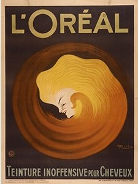

La fundación de L'Oréal en 1909 coincidió con la primera genial idea del químico Eugène Schueller. Las mujeres querían tener el pelo corto y rubio, adoptando la tendencia de un estilo juvenil. Patentó una fórmula de coloración que, a diferencia de cualquier otra en el mercado en ese momento, era perfectamente segura de usar. Los tintes para el cabello serían el centro de la empresa en las décadas venideras.
En los sesenta, inspirado en Brigitte Bardot, el pelo largo se convirtió en la tendencia —salvaje y sexy o domesticado en un recogido. Bajo la dirección de Dalle, la empresa adoptó la tendencia de la época, innovando con productos que ofrecían los resultados que las mujeres querían sin comprometer su seguridad. El lanzamiento de la gama de tintes para el cabello Préférence en los años 70 marcó un punto de inflexión con la creación de su mundialmente conocido eslogan, "Porque yo lo valgo". El primer mensaje publicitario que resalta la importancia del amor propio.
El cambio de milenio anunció una nueva era para L'Oréal al acelerar su expansión a nuevos mercados, sectores y canales de distribución, además de aceptar el desafío de la sostenibilidad. L’Oréal Men Expert nació, la primera línea antienvejecimiento para hombres del mercado a gran escala, y la marca incorporó la oportunidad digital mucho antes que sus competidores, innovando constantemente para estar en sintonía con los tiempos y acompañar a los consumidores en sus cambiantes estilos de vida y necesidades.
